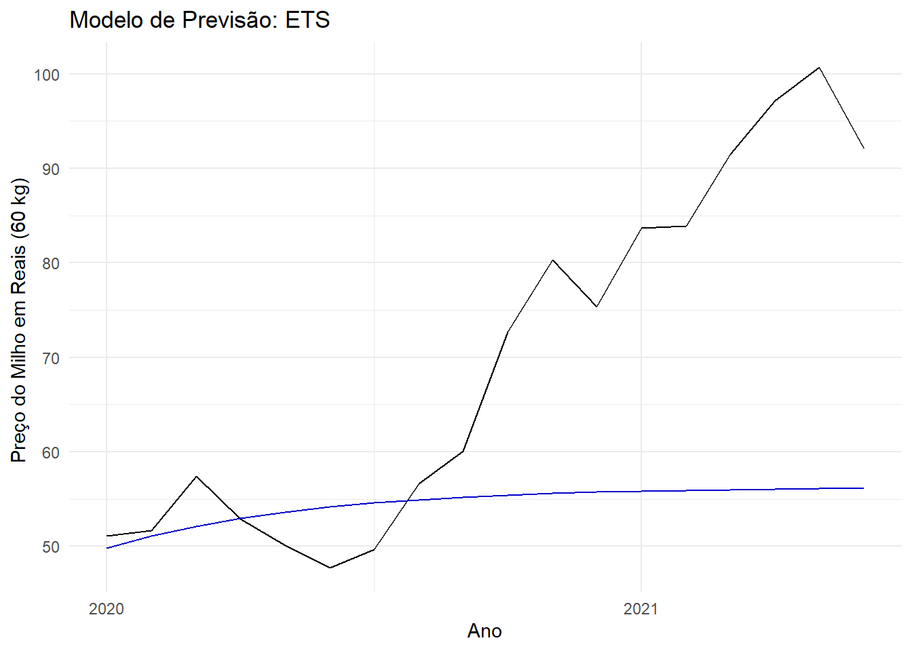
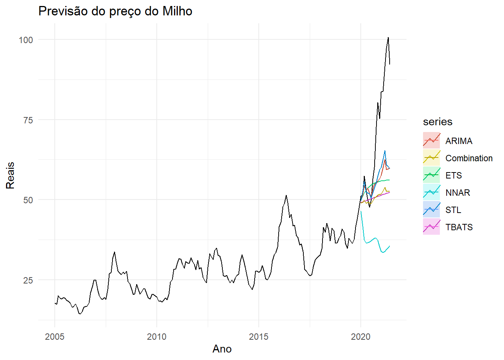

Analise Pretitiva
Para isso temos que ver se é uma séries temporal com tendências, ou com sazonalidade, não estacionárias.
0.3 Diferença entre os meses
Fazendo o diff() para ver a diferença do dados se tem alguma tendência .
DY <- diff(df_ts)
autoplot(DY)ggseasonplot(DY)+
ggtitle("Diferença entre os meses ") +
ylab("Difernaça do Preço em Reais") +
xlab("Mês")+
theme_minimal()ggsubseriesplot(DY) +
ylab("Difernça em do Preço Reais") +
xlab("Mês") +
theme_minimal()lambda <- BoxCox.lambda(df_ts)
ts_bx <- BoxCox(df_ts,lambda)ggtsdisplay(ts_bx)Diferenciação não sazional
ndiffs(ts_bx)## [1] 1ts_bd <- diff(ts_bx,1)ggtsdisplay(ts_bd)Diferenciação não sazional
nsdiffs(ts_bd)## [1] 00.4 Treino dos dados para as Previsões
Separanado o treino até o ano de 2020 para , ter uma previsão de 1 anos para ver qual modelo que se encaixar melhor para uma futura previsão.
treino <- window(df_ts, start=2005 , end = c(2019,12 ))
v <- window(df_ts ,start=c(2020,1) )0.5 Tipos de Previsões
0.5.1 ARIMA
Autoregressive Integrated Moving Average
Utiliza a autocorrelação e médias móveis do passado para prever o futuro. Utilizado em casos que os dados mostram evidências de não estacionariedade
Previsão
ARIMA <- forecast(auto.arima(treino, lambda = lambda, biasadj = TRUE, stepwise = FALSE,
approximation = FALSE), h = 18)
autoplot(v) + autolayer(ARIMA , PI= F , series = "ARIMA") +
ggtitle("Modelo de Previsão: ARIMA ") +
ylab("Preço do Milho em Reais (60 kg)") +
xlab("Ano") +
theme_minimal()summary(ARIMA)##
## Forecast method: ARIMA(0,1,1)(1,0,2)[12]
##
## Model Information:
## Series: treino
## ARIMA(0,1,1)(1,0,2)[12]
## Box Cox transformation: lambda= -0.6320698
##
## Coefficients:
## ma1 sar1 sma1 sma2
## 0.3324 0.8349 -0.9649 0.2532
## s.e. 0.0703 0.1120 0.1259 0.0982
##
## sigma^2 estimated as 7.013e-05: log likelihood=602.62
## AIC=-1195.24 AICc=-1194.89 BIC=-1179.3
##
## Error measures:
## ME RMSE MAE MPE MAPE MASE
## Training set -0.04769146 1.987826 1.527124 -0.3483516 5.261001 0.2346391
## ACF1
## Training set -0.09270925
##
## Forecasts:
## Point Forecast Lo 80 Hi 80 Lo 95 Hi 95
## Jan 2020 49.96307 43.88796 56.55614 41.29766 60.93228
## Feb 2020 51.54499 41.27660 63.36841 37.48358 72.60022
## Mar 2020 54.43649 40.50832 71.27566 35.89112 86.25980
## Apr 2020 52.76638 37.48438 71.84504 32.74288 90.31329
## May 2020 53.65115 36.28888 76.10318 31.25705 99.90104
## Jun 2020 51.98687 34.05894 75.72620 29.08418 102.45185
## Jul 2020 51.14101 32.47604 76.45215 27.50902 106.71121
## Aug 2020 53.37266 32.38558 82.87742 27.12575 121.47404
## Sep 2020 54.83448 31.97926 88.03563 26.53761 135.14612
## Oct 2020 55.17351 31.18475 90.96932 25.69674 145.25119
## Nov 2020 55.72038 30.53168 94.35378 24.98985 157.06584
## Dec 2020 56.57353 30.03131 98.48306 24.41751 171.61157
## Jan 2021 57.63617 29.76545 102.80355 24.06669 186.92352
## Feb 2021 59.98080 29.93545 110.32999 24.04217 212.39281
## Mar 2021 62.50668 30.12335 118.74298 24.03307 243.69548
## Apr 2021 59.38612 28.72970 112.41171 22.93764 229.01652
## May 2021 59.65104 28.32736 114.89248 22.53875 242.68357
## Jun 2021 59.93996 27.94997 117.46702 22.16473 257.59069Valores do Modelo
autoplot(v) + autolayer(ARIMA , PI= T , series = "ARIMA") +
ggtitle("Modelo de Previsão: ARIMA ") +
ylab("Preço do Milho em Reais (60 kg)") +
xlab("Ano") +
theme_minimal()## Series: treino
## ARIMA(0,1,1)(1,0,2)[12]
## Box Cox transformation: lambda= -0.6320698
##
## Coefficients:
## ma1 sar1 sma1 sma2
## 0.3324 0.8349 -0.9649 0.2532
## s.e. 0.0703 0.1120 0.1259 0.0982
##
## sigma^2 estimated as 7.013e-05: log likelihood=602.62
## AIC=-1195.24 AICc=-1194.89 BIC=-1179.3| Point Forecast | Lo 80 | Hi 80 | Lo 95 | Hi 95 | |
|---|---|---|---|---|---|
| Jan 2020 | 49.96307 | 43.88796 | 56.55614 | 41.29765 | 60.93228 |
| Feb 2020 | 51.54500 | 41.27660 | 63.36841 | 37.48358 | 72.60022 |
| Mar 2020 | 54.43649 | 40.50832 | 71.27566 | 35.89112 | 86.25980 |
| Apr 2020 | 52.76638 | 37.48438 | 71.84504 | 32.74288 | 90.31329 |
| May 2020 | 53.65115 | 36.28888 | 76.10318 | 31.25705 | 99.90104 |
| Jun 2020 | 51.98687 | 34.05894 | 75.72620 | 29.08418 | 102.45185 |
| Jul 2020 | 51.14101 | 32.47604 | 76.45215 | 27.50902 | 106.71121 |
| Aug 2020 | 53.37266 | 32.38558 | 82.87742 | 27.12575 | 121.47404 |
| Sep 2020 | 54.83448 | 31.97926 | 88.03563 | 26.53761 | 135.14612 |
| Oct 2020 | 55.17351 | 31.18475 | 90.96932 | 25.69674 | 145.25119 |
| Nov 2020 | 55.72038 | 30.53168 | 94.35378 | 24.98985 | 157.06584 |
| Dec 2020 | 56.57353 | 30.03131 | 98.48306 | 24.41751 | 171.61157 |
| Jan 2021 | 57.63617 | 29.76545 | 102.80355 | 24.06669 | 186.92352 |
| Feb 2021 | 59.98080 | 29.93545 | 110.32998 | 24.04217 | 212.39281 |
| Mar 2021 | 62.50668 | 30.12335 | 118.74298 | 24.03307 | 243.69548 |
| Apr 2021 | 59.38611 | 28.72970 | 112.41171 | 22.93764 | 229.01652 |
| May 2021 | 59.65104 | 28.32736 | 114.89248 | 22.53875 | 242.68357 |
| Jun 2021 | 59.93996 | 27.94997 | 117.46702 | 22.16473 | 257.59069 |
Análise Residual Residual
checkresiduals(ARIMA)##
## Ljung-Box test
##
## data: Residuals from ARIMA(0,1,1)(1,0,2)[12]
## Q* = 16.751, df = 20, p-value = 0.6691
##
## Model df: 4. Total lags used: 240.5.2 ETS
Error Trend Seasonal
É um método de abordagem para prever séries temporais univariadas. Este modelo ETS se concentra em tendências e componentes sazonais. A flexibilidade do modelo ETS reside em sua capacidade de tendência e componentes sazonais de diferentes características.
ETS <- forecast(ets(treino), h = 18)
autoplot(v) +autolayer(ETS,PI =F) +
ggtitle("Modelo de Previsão: ETS ") +
ylab("Preço do Milho em Reais (60 kg) ") +
xlab("Ano") +
theme_minimal()
ETS <- forecast(ets(treino), h = 18)
autoplot(v) +autolayer(ETS,PI =T) +
ggtitle("Modelo de Previsão: ETS ") +
ylab("Preço do Milho em Reais (60 kg)") +
xlab("Ano") +
theme_minimal()se <- summary(ETS)
se$model## ETS(M,Ad,N)
##
## Call:
## ets(y = treino)
##
## Smoothing parameters:
## alpha = 0.9923
## beta = 0.3062
## phi = 0.8
##
## Initial states:
## l = 17.7833
## b = -0.1054
##
## sigma: 0.0721
##
## AIC AICc BIC
## 1181.997 1182.483 1201.155knitr::kable(se)| Point Forecast | Lo 80 | Hi 80 | Lo 95 | Hi 95 | |
|---|---|---|---|---|---|
| Jan 2020 | 49.77423 | 45.17448 | 54.37398 | 42.7395155 | 56.80894 |
| Feb 2020 | 51.07981 | 43.67457 | 58.48504 | 39.7544810 | 62.40513 |
| Mar 2020 | 52.12427 | 42.05293 | 62.19561 | 36.7214876 | 67.52706 |
| Apr 2020 | 52.95984 | 40.29513 | 65.62456 | 33.5908326 | 72.32886 |
| May 2020 | 53.62830 | 38.43375 | 68.82286 | 30.3902344 | 76.86637 |
| Jun 2020 | 54.16307 | 36.50217 | 71.82397 | 27.1530484 | 81.17309 |
| Jul 2020 | 54.59088 | 34.52765 | 74.65411 | 23.9068140 | 85.27495 |
| Aug 2020 | 54.93313 | 32.53102 | 77.33525 | 20.6720516 | 89.19421 |
| Sep 2020 | 55.20693 | 30.52764 | 79.88623 | 17.4632083 | 92.95065 |
| Oct 2020 | 55.42597 | 28.52856 | 82.32338 | 14.2899291 | 96.56201 |
| Nov 2020 | 55.60120 | 26.54149 | 84.66092 | 11.1582036 | 100.04420 |
| Dec 2020 | 55.74139 | 24.57159 | 86.91119 | 8.0712979 | 103.41148 |
| Jan 2021 | 55.85354 | 22.62213 | 89.08495 | 5.0304835 | 106.67659 |
| Feb 2021 | 55.94326 | 20.69493 | 91.19158 | 2.0355952 | 109.85092 |
| Mar 2021 | 56.01503 | 18.79078 | 93.23928 | -0.9145462 | 112.94461 |
| Apr 2021 | 56.07245 | 16.90970 | 95.23521 | -3.8218163 | 115.96672 |
| May 2021 | 56.11839 | 15.05114 | 97.18564 | -6.6885492 | 118.92533 |
| Jun 2021 | 56.15514 | 13.21420 | 99.09608 | -9.5173623 | 121.82764 |
Análise Residual Residual
checkresiduals(ETS)##
## Ljung-Box test
##
## data: Residuals from ETS(M,Ad,N)
## Q* = 21.339, df = 19, p-value = 0.3184
##
## Model df: 5. Total lags used: 240.5.3 STL-ETS
Seasonal and Trend decomposition using Loess
É divido em tendência, a sazonalidade e o restante. O STL usa LOESS (suavização de dispersão estimada localmente) para extrair estimativas de suavizar as estimativas dos três componentes.
STL <- stlf(treino, lambda = 0, h = 18, biasadj = TRUE)
autoplot(v) + autolayer(STL, series = "STL", PI = F) +
ggtitle("Modelo de Previsão: STL-ETS ") +
ylab("Preço do Milho em Reais (60 kg)") +
xlab("Ano") +
theme_minimal()STL <- stlf(treino, lambda = 0, h = 18, biasadj = TRUE)
autoplot(v) + autolayer(STL, series = "STL", PI = T) +
ggtitle("Modelo de Previsão: STL-ETS ") +
ylab("Preço do Milho em Reais (60 kg)") +
xlab("Ano") +
theme_minimal()st <- summary(STL)
st$model## ETS(A,Ad,N)
##
## Call:
## ets(y = na.interp(x), model = etsmodel, allow.multiplicative.trend = allow.multiplicative.trend)
##
## Smoothing parameters:
## alpha = 0.9999
## beta = 0.3427
## phi = 0.8
##
## Initial states:
## l = 2.6765
## b = 0.1541
##
## sigma: 0.0612
##
## AIC AICc BIC
## -64.09543 -63.60988 -44.93769knitr::kable(st)| Point Forecast | Lo 80 | Hi 80 | Lo 95 | Hi 95 | |
|---|---|---|---|---|---|
| Jan 2020 | 49.68943 | 45.85589 | 53.64242 | 43.99128 | 55.91610 |
| Feb 2020 | 52.57396 | 46.07688 | 59.40227 | 43.08074 | 63.53353 |
| Mar 2020 | 55.60435 | 46.36077 | 65.49530 | 42.30895 | 71.76761 |
| Apr 2020 | 52.33109 | 41.53994 | 64.07966 | 37.03719 | 71.87008 |
| May 2020 | 52.19707 | 39.47856 | 66.27737 | 34.41964 | 76.01866 |
| Jun 2020 | 51.92839 | 37.45745 | 68.20896 | 31.96245 | 79.93547 |
| Jul 2020 | 50.49919 | 34.77771 | 68.46326 | 29.06982 | 81.90608 |
| Aug 2020 | 52.25517 | 34.39779 | 72.96673 | 28.18943 | 89.03673 |
| Sep 2020 | 53.70542 | 33.83177 | 77.08906 | 27.20543 | 95.86538 |
| Oct 2020 | 55.27884 | 33.36538 | 81.42163 | 26.34790 | 103.10743 |
| Nov 2020 | 57.33031 | 33.19494 | 86.51009 | 25.76111 | 111.47410 |
| Dec 2020 | 59.34307 | 33.00008 | 91.60383 | 25.18572 | 120.02567 |
| Jan 2021 | 60.05062 | 32.10770 | 94.69802 | 24.11452 | 126.08730 |
| Feb 2021 | 62.57779 | 32.20530 | 100.69225 | 23.81719 | 136.15477 |
| Mar 2021 | 65.39217 | 32.42611 | 107.24466 | 23.62635 | 147.18853 |
| Apr 2021 | 60.95154 | 29.15007 | 101.78280 | 20.93664 | 141.71214 |
| May 2021 | 60.32208 | 27.84954 | 102.47334 | 19.72703 | 144.66625 |
| Jun 2021 | 59.62897 | 26.59894 | 102.96202 | 18.59002 | 147.31999 |
Análise Residual Residual
checkresiduals(STL)## Warning in checkresiduals(STL): The fitted degrees of freedom is based on the
## model used for the seasonally adjusted data.
##
## Ljung-Box test
##
## data: Residuals from STL + ETS(A,Ad,N)
## Q* = 48.492, df = 19, p-value = 0.0002177
##
## Model df: 5. Total lags used: 240.5.4 NNAR
Neural Network AutoRegression
Com os dados da série temporal, os valores dos Lags da série temporal podem ser usados como entradas para uma rede neural, assim como usamos valores defasados em um modelo de autoregressão linear. Chamamos isso de uma rede neural de autorressões ou modelo NNAR.
NNAR <- forecast(nnetar(treino), h = 18)
autoplot(v) + autolayer(NNAR,PI = F) +
ggtitle("Modelo de Previsão: NNAR ") +
ylab("Preço do Milho em Reais (60 kg)") +
xlab("Ano") +
theme_minimal()0.5.5 TBATS
Exponential Smoothing Method + Box-Cox Transformation + ARMA model for residuals + Trigonometric Seasonal
É um método de previsão para modelar dados de séries temporáveis. O principal objetivo disso é prever séries temporizadas com padrões sazonais complexos usando suavização exponencial.Além disso é um modelo híbrido que utiliza de outros metodos de previsão.
TBATS <- forecast(tbats(treino, biasadj = TRUE), h = 18)
autoplot(v) + autolayer(TBATS,PI=F) +
ggtitle("Modelo de Previsão: TBATS ") +
ylab("Reais") +
xlab("Ano") +
theme_minimal()autoplot(v) + autolayer(TBATS,PI=T) +
ggtitle("Modelo de Previsão: TBATS ") +
ylab("Reais") +
xlab("Ano") +
theme_minimal()stb <- summary(TBATS)
stb$model## BATS(0, {0,0}, -, -)
##
## Call: tbats(y = treino, biasadj = TRUE)
##
## Parameters
## Lambda: 2e-06
## Alpha: 1.288858
##
## Seed States:
## [,1]
## [1,] 2.923271
## attr(,"lambda")
## [1] 1.862661e-06
##
## Sigma: 0.068008
## AIC: 1161.805knitr::kable(stb)| Point Forecast | Lo 80 | Hi 80 | Lo 95 | Hi 95 | |
|---|---|---|---|---|---|
| Jan 2020 | 49.18811 | 44.97860 | 53.54365 | 42.95056 | 56.07187 |
| Feb 2020 | 49.37662 | 42.57067 | 56.57225 | 39.48424 | 60.99441 |
| Mar 2020 | 49.56514 | 40.94153 | 58.82335 | 37.19689 | 64.74515 |
| Apr 2020 | 49.75366 | 39.65237 | 60.73579 | 35.42062 | 67.99198 |
| May 2020 | 49.94217 | 38.56586 | 62.44689 | 33.94710 | 70.94326 |
| Jun 2020 | 50.13069 | 37.61760 | 64.02105 | 32.67888 | 73.69647 |
| Jul 2020 | 50.31921 | 36.77124 | 65.49462 | 31.56113 | 76.30644 |
| Aug 2020 | 50.50772 | 36.00390 | 66.89047 | 30.55946 | 78.80760 |
| Sep 2020 | 50.69624 | 35.30010 | 68.22411 | 29.65059 | 81.22324 |
| Oct 2020 | 50.88476 | 34.64877 | 69.50659 | 28.81799 | 83.56993 |
| Nov 2020 | 51.07327 | 34.04168 | 70.74615 | 28.04936 | 85.85997 |
| Dec 2020 | 51.26179 | 33.47252 | 71.94910 | 27.33531 | 88.10277 |
| Jan 2021 | 51.45031 | 32.93633 | 73.12040 | 26.66848 | 90.30574 |
| Feb 2021 | 51.63883 | 32.42912 | 74.26405 | 26.04295 | 92.47479 |
| Mar 2021 | 51.82734 | 31.94763 | 75.38330 | 25.45392 | 94.61476 |
| Apr 2021 | 52.01586 | 31.48916 | 76.48086 | 24.89739 | 96.72966 |
| May 2021 | 52.20438 | 31.05143 | 77.55900 | 24.37003 | 98.82285 |
| Jun 2021 | 52.39289 | 30.63251 | 78.61966 | 23.86901 | 100.89718 |
Análise Residual Residual
checkresiduals(STL)## Warning in checkresiduals(STL): The fitted degrees of freedom is based on the
## model used for the seasonally adjusted data.##
## Ljung-Box test
##
## data: Residuals from STL + ETS(A,Ad,N)
## Q* = 48.492, df = 19, p-value = 0.0002177
##
## Model df: 5. Total lags used: 240.5.6 Combination
É um metodo que utilza o valor dois pontos de previção e faz uma média entre eles para
Combination <- (ETS[["mean"]] + ARIMA[["mean"]] + STL[["mean"]] + NNAR[["mean"]] +
TBATS[["mean"]])/5autoplot(v) + autolayer(Combination,PI=F) +
ggtitle("Modelo de Previsão: Combinação ") +
ylab("Reais") +
xlab("Ano") +
theme_minimal()## Warning: Ignoring unknown parameters: PI0.5.7 Todas a Previsões juntas
autoplot(df_ts) + autolayer(ETS, series = "ETS", PI = FALSE) + autolayer(ARIMA,
series = "ARIMA", PI = FALSE) + autolayer(STL, series = "STL", PI = FALSE) +
autolayer(NNAR, series = "NNAR", PI = FALSE) + autolayer(TBATS, series = "TBATS",
PI = FALSE) + autolayer(Combination, series = "Combination") + xlab("Ano") +
ylab("Reais") + ggtitle("Previsão do preço do Milho ") + theme_minimal()
0.5.8 Acurácia das previsões
| ETS | 22.61776 |
| ARIMA | 20.52142 |
| STL-ETS | 19.52899 |
| NNAR | 38.36219 |
| TBATS | 25.53900 |
| Combination | 25.09519 |